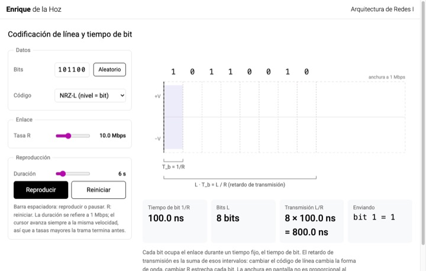
Topic 1: Introduction: delays, layers and packet switching · Introducción: retardos, capas y conmutación de paquetes
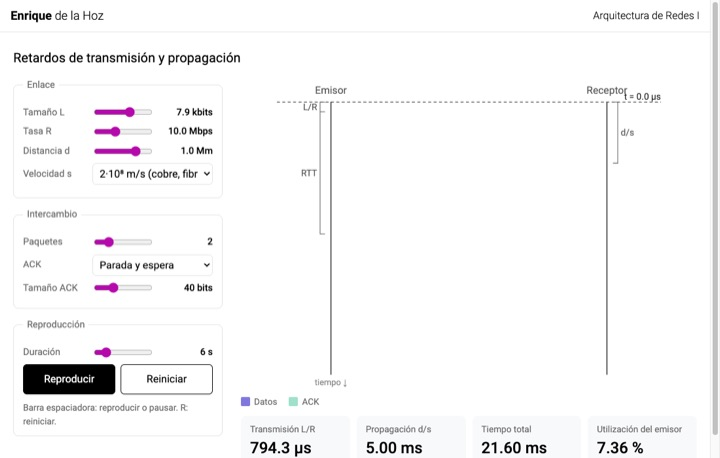
Session 1.1
Transmission and propagation delay: space-time diagramRetardos de transmisión y propagación: diagrama espacio-tiempo
Adjust size, rate, distance and propagation speed and follow the packets between sender and receiver. Compare stop-and-wait with pipelining and the sender's utilization.
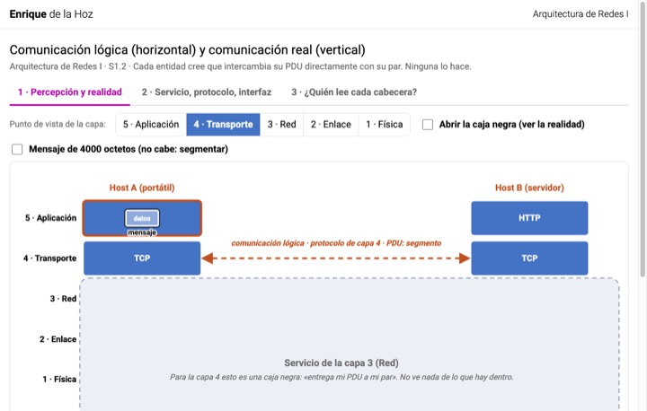
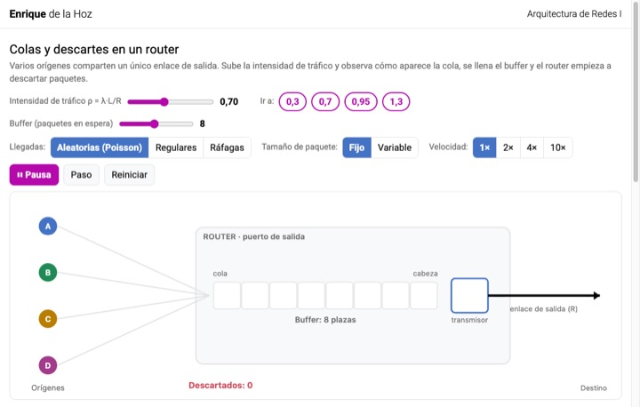
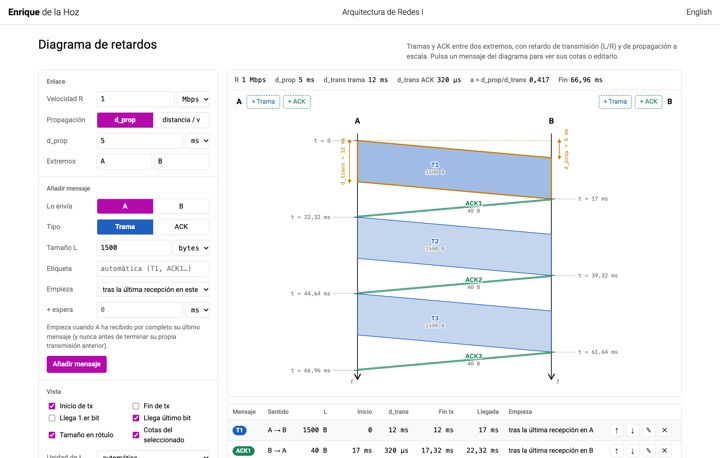
Delay lab · Laboratorio de retardos
Three visualizations for problems P6, P25 to P27 and P28 from Kurose and Ross (lab 1.2). Use prediction mode to anticipate the result before seeing it.
Topic 2: Application layer: DNS and HTTP · Capa de aplicación: DNS y HTTP
DNS · DNS
Five animations on why names are needed, their structure, zone delegation and iterative, recursive and mixed queries.
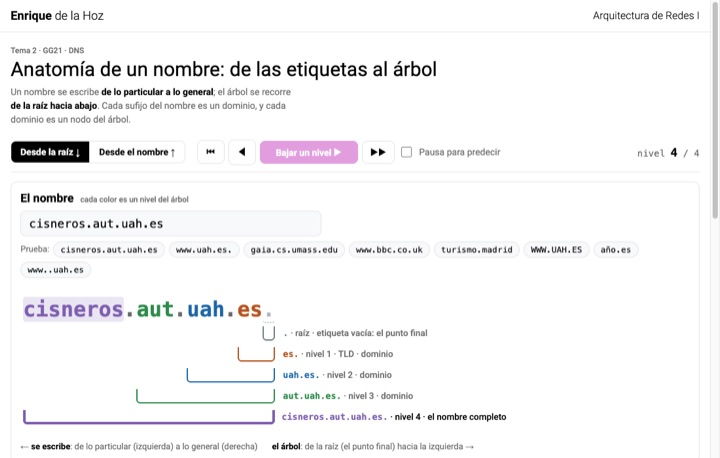
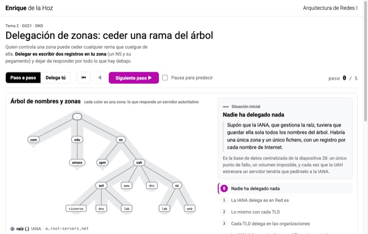
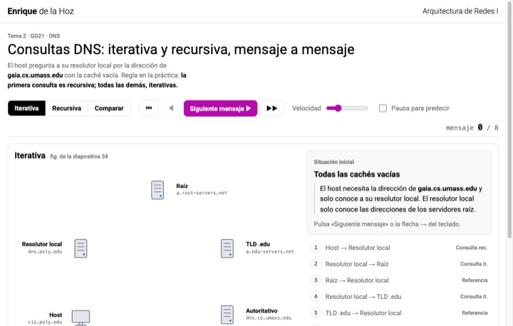
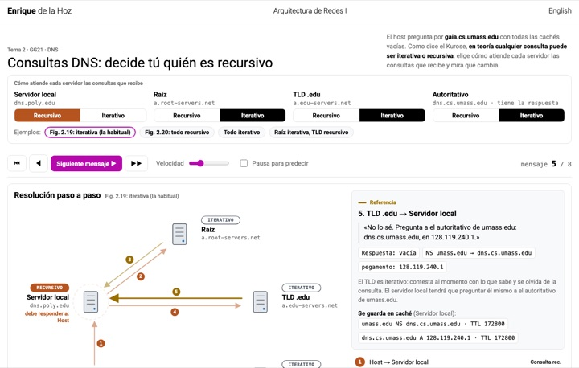
Session 2.1
DNS queries: you decide who is recursiveConsultas DNS: decide tú quién es recursivo
The same resolution, but you choose whether the local server, the root, the TLD and the authoritative server work recursively or iteratively. Compare who sends the queries, who has to wait and where the answer ends up cached.
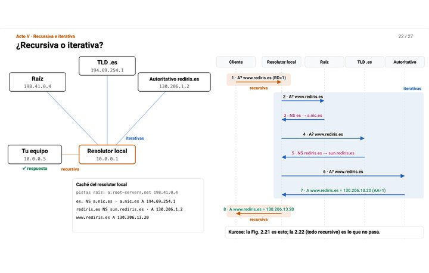
Session 2.2
DNS step by stepDNS paso a paso
The DNS told from the why in 27 steps, from why an IP address is not enough to a query followed message by message. Why we need names, how the tree is split up, what your computer sees and what happens behind it, and where each query is recursive or iterative.
HTTP · HTTP
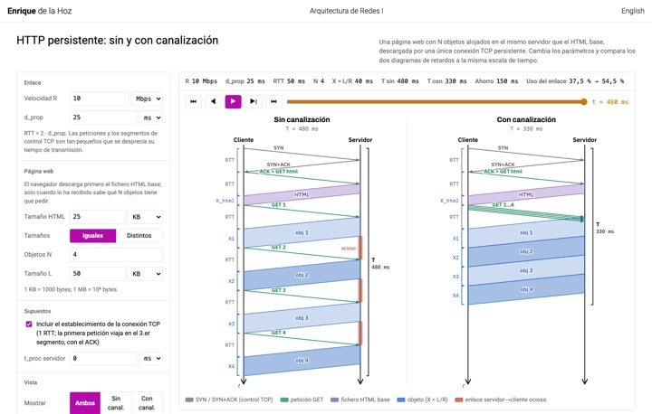
Session 2.2
Persistent HTTP: without and with pipeliningHTTP persistente: sin y con canalización
A page with N objects downloaded over a single persistent TCP connection. Compare the delay diagrams without and with pipelining on the same time scale, see when the link sits idle and practise with random exercises.
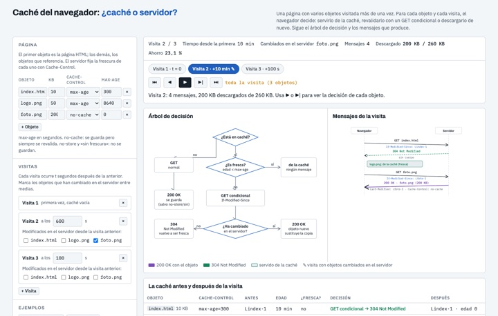
Session 2.3
Browser cache: cache or server?Caché del navegador: ¿caché o servidor?
A page with several objects visited several times. For each object, the browser follows the decision tree: serve it from the cache, revalidate it with a conditional GET (304 or 200) or download it again. Follow the path in the tree, the messages and the cache state, and practise with exercises.
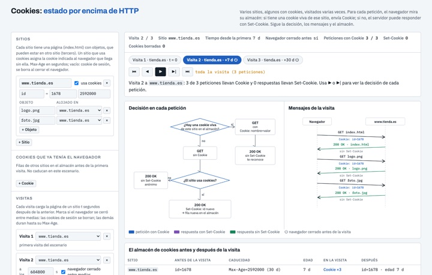
Session 2.3
Cookies: state on top of HTTPCookies: estado por encima de HTTP
Several sites, some of which use cookies, visited several times. For each request the browser looks in its cookie store: if it has a live cookie for that site it sends Cookie; if not, the server may answer with Set-Cookie. Follow the decision, the messages, the store and what each server knows; practise with exercises.
Topic 3: Transport layer · Capa de transporte
Multiplexing and demultiplexing · Multiplexación y demultiplexación
How the host chooses the socket for each segment: UDP by (IP_D, PD), TCP by the 4-tuple (IP_O, PO, IP_D, PD).
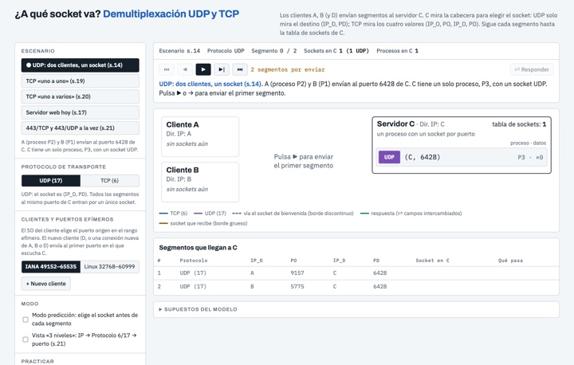
Session 3.1
Which socket? UDP and TCP demultiplexing¿A qué socket va? Demultiplexación UDP y TCP
Clients A, B and D send segments to server C, which chooses the socket from the header: UDP only looks at the destination (IP_D, PD); TCP at the four values. Welcome and connection sockets, the reply with swapped ports, ephemeral ports, prediction mode and exercises.
UDP · UDP
The UDP datagram: 8-byte header, maximum sizes, pseudo-header and the one's complement checksum computed step by step.
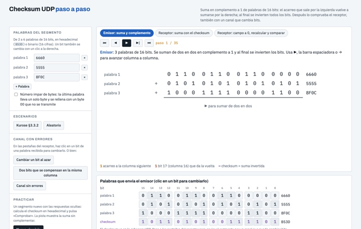
Session 3.1
UDP checksum step by stepChecksum UDP paso a paso
One's complement sum of 16-bit words, column by column: the carry that leaves on the left wraps around and is added on the right, and at the end the bits are inverted. Check the checksum as the receiver in both ways and flip bits in the channel to see which errors are detected.
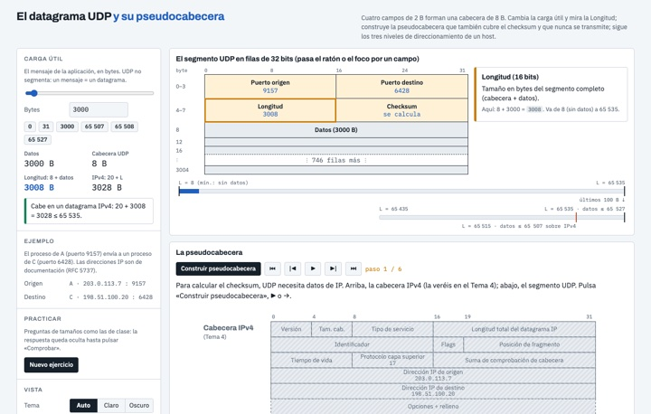
Session 3.1
The UDP datagram and its pseudo-headerEl datagrama UDP y su pseudocabecera
The UDP header in 32-bit rows, with an explanation of each field. Change the payload and watch the Length update and where the limits are; build the pseudo-header from the IPv4 header and follow the three levels of addressing: IP, protocol 6/17 and port.